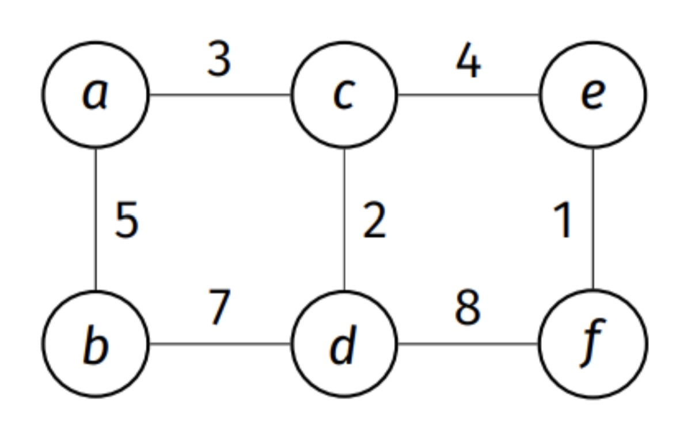
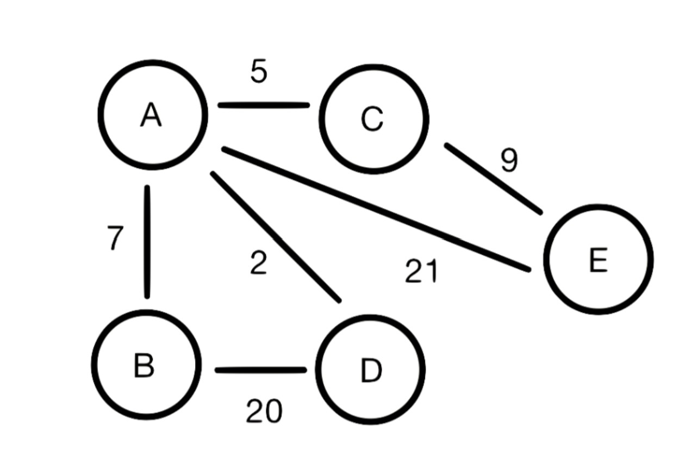
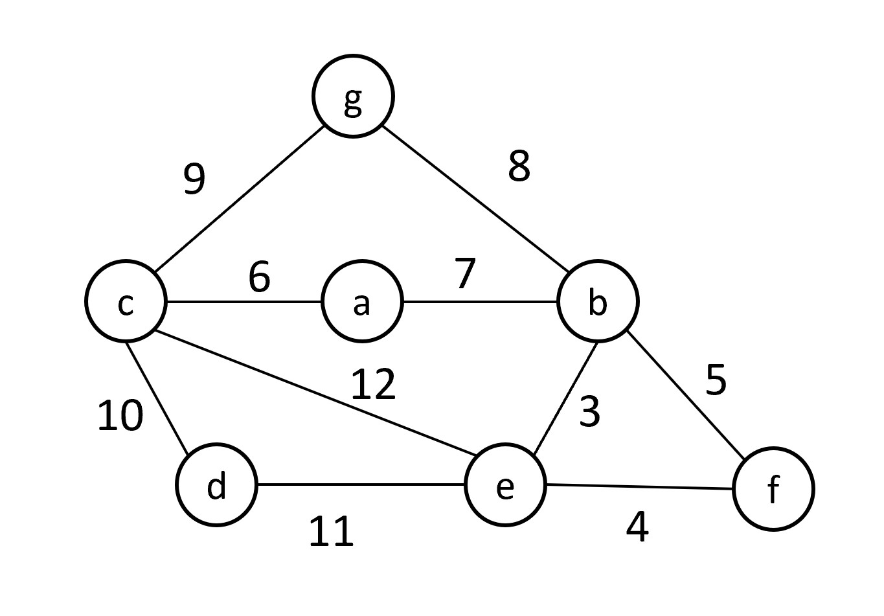

Tags: minimum spanning trees
Let \(G\) be a connected graph with 9 nodes. As you know, there may be multiple minimum spanning trees of this graph. How many edges must be included in any given minimum spanning tree?
Answer: 8. Every spanning tree of a graph with \(|V|\) nodes is a tree on those \(|V|\) nodes, so it has exactly \(|V| - 1 = 8\) edges.
Tags: minimum spanning trees
Consider the following weighted graph:

True or false: the edge \((a, b)\) is in every minimum spanning tree of the graph.
True. Node \(b\) has only two edges: \((a, b)\) with weight 5 and \((b, d)\) with weight 7. A spanning tree must include at least one of them. If a spanning tree used \((b, d)\) but not \((a, b)\), adding \((a, b)\) would create a cycle containing \((b, d)\); removing \((b, d)\) gives another spanning tree with smaller total weight. So every minimum spanning tree contains \((a, b)\).
Tags: minimum spanning trees, shortest paths
Suppose there is a unique shortest path \(p\) between nodes \(u\) and \(v\) in a graph \(G\) and that there is a unique minimum spanning tree \(T\) of \(G\). True or false: the path between \(u\) and \(v\) in the MST \(T\) must be the same as the path \(p\).
False. Consider a triangle on nodes \(u\), \(v\), and \(w\) with edge weights \(w(u, v) = 3\), \(w(u, w) = 2\), and \(w(w, v) = 2\). The unique MST uses edges \((u, w)\) and \((w, v)\), so the path from \(u\) to \(v\) in the MST has length 4. But the unique shortest path from \(u\) to \(v\) is the single edge \((u, v)\), with length 3.
Tags: minimum spanning trees
Suppose you are running Kruskal's algorithm on the following undirected, weighted graph tofind a minimum spanning tree:

In what order are the edges of this graph added to the minimum spanning tree?
(a, d), (a, c), (a, b), (c, e). Kruskal's algorithm considers edges in increasing order of weight: (a, d) with weight 2, (a, c) with weight 5, (a, b) with weight 7, and (c, e) with weight 9 are each added since none creates a cycle. The remaining edges, (b, d) with weight 20 and (a, e) with weight 21, would create cycles.
Tags: minimum spanning trees
True or false: given a graph \(G\) with multiple minimum spanning trees (MSTs), Prim's and Kruskal's algorithms are guaranteed to return the same MST.
False. When there are ties in the edge weights, the MST each algorithm returns depends on how the ties are broken, and the two algorithms consider edges in different orders. For example, in a triangle whose three edges all have the same weight, each algorithm could return any of the three MSTs, depending on the order in which it considers the edges.
Tags: minimum spanning trees
A maximum spanning tree of a graph is a spanning tree that has the greatest possible total edge weight. Suppose Kruskal's algorithm is modified so that instead of looping through edges in ascending order of weight, it processes them in descending order of weight. True or false: the output of this modified algorithm is guaranteed to be a maximum spanning tree.
True. Processing edges in descending order of weight is the same as running ordinary Kruskal's algorithm on the graph with every weight negated. That finds a minimum spanning tree of the negated graph, which is a maximum spanning tree of the original graph.
Tags: minimum spanning trees
Consider finding the minimum spanning tree of the graph below.

Suppose you are running Prim's algorithm starting with node \(a\). What is the weight of the 2nd edge added to the minimum spanning tree?
7.
Prim's algorithm starting at \(a\) adds edges in the order \((a, c)\)(6), \((a, b)\)(7), \((b, e)\)(3), \((e, f)\)(4), \((b, g)\)(8), \((c, d)\)(10).
Again running Prim's algorithm starting with node \(a\), what is the weight of the 3rd edge added to the minimum spanning tree?
3.
Prim's algorithm starting at \(a\) adds edges in the order \((a, c)\)(6), \((a, b)\)(7), \((b, e)\)(3), \((e, f)\)(4), \((b, g)\)(8), \((c, d)\)(10).
Suppose you are running Kruskal's algorithm(not Prim's algorithm). What is the weight of the 4th edge added to the minimum spanning tree?
7.
Kruskal's algorithm adds edges in the order \((b, e)\)(3), \((e, f)\)(4), \((a, c)\)(6), \((a, b)\)(7), \((b, g)\)(8), \((c, d)\)(10), skipping \((b, f)\)(5) and \((c, g)\)(9) because they would create cycles.
What is the total weight of the minimum spanning tree?
38.
The minimum spanning tree's edges have weights 3, 4, 6, 7, 8, and 10, and \(3 + 4 + 6 + 7 + 8 + 10 = 38\).